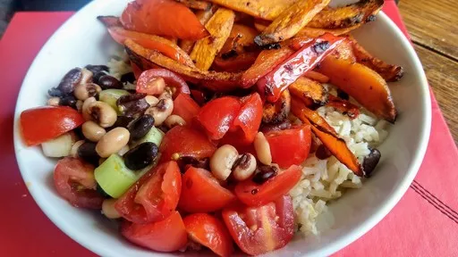

40 mins
Serves 2VegetarianVeganDairy FreeGluten Free
Mexican

Serve this Mexican rice bowl with a dollop of yogurt.
Ingredients
75g uncooked brown rice
0.5-1tbsp chipotle paste, to taste
juice of 0.5 lemon, plus wedges to serve
2tsp olive oil
1medium sweet potato (or 2 small ones), peeled and cut into thin wedges
1
red pepper, deseeded and sliced
1x 400 g tin black-eyed or black beans, rinsed and drained
100g cherry tomatoes, quartered
2
spring onions, finely sliced
0.5x 30 g pack coriander, half chopped and half leaves picked
½small avocado, sliced
Instructions
Cook the rice following the pack instructions and drain. Meanwhile, heat the oven to 200°C/Gas 7.
Mix the chipotle paste with about half the lemon juice, all the oil and some seasoning. Toss the sweet potato wedges and pepper slices with the mixture and tip them out onto a baking tray. Roast in the oven for 25-30 minutes
until tender and lightly charred, stirring once or twice.
Toss half the beans with the tomatoes, spring onions, most of the remaining lemon juice, chopped coriander and some seasoning. Stir the other half of the beans through the cooked rice, along with the last of the lemon juice.
Divide the rice between two bowls, then do the same with the roasted sweet potato, red pepper, bean mix, avocado slices and a spoon of yogurt (dairy-free if required). Scatter with coriander and serve with lemon wedges to squeeze over.